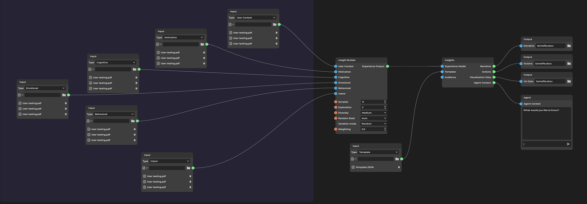
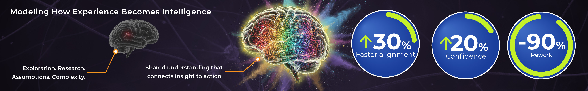
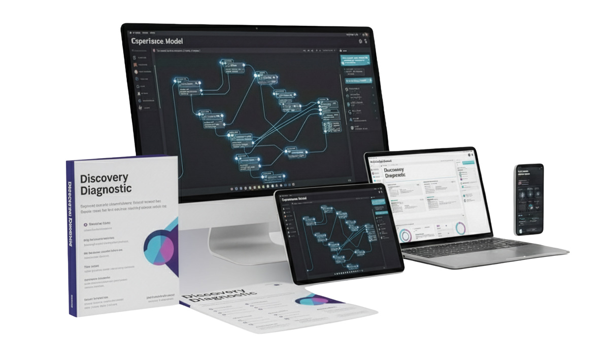
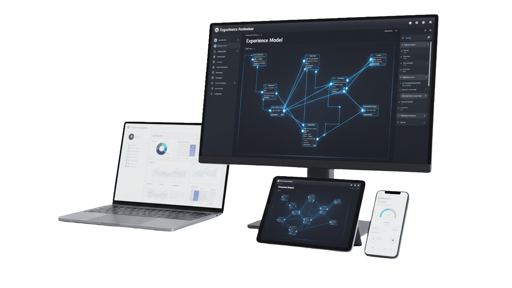

Where intelligent systems meet human understanding
Experience Modeling helps teams uncover what's holding users back, validate ideas before they build,
and connect every design decision to measurable business outcomes — guided by human insight, modeled
through intelligent agents.
Experience Modeling blends design, behavioral science, and AI to turn uncertainty into clarity.
When research isn’t enough.
Teams today don’t struggle for data — they struggle for direction.
Reports pile up, insights conflict, and decisions slow while the market moves faster.
The result?
Assumptions instead of understanding.
Rework instead of progress.
Experience Modeling changes that.
By combining human empathy with AI-assisted synthesis, it helps teams uncover what’s missing,
what’s in the way, and where to focus first — before design even begins.

Introducing Experience Modeling.
Most organizations are swimming in research, but starving for clarity.
They have the data — but not the model that connects it.
Experience Modeling is that missing bridge.
It transforms disjointed findings into a living map of human understanding — showing how people
think, feel, and behave, and how your product should respond.
This isn't another dashboard or design framework.
It's a new layer of intelligence between research, design, and strategy — one that connects every
insight, decision, and assumption into a shared mental model that evolves with your team.
By combining behavioral science, systems design, and intelligent agents, Experience Modeling helps you:
Reveal friction, emotion, and motivation that traditional analytics miss.
Visualize how users experience time, effort, and meaning across journeys.
Simulate "what if" scenarios before committing to costly builds.
Align every function — product, design, engineering, and leadership — around a single understanding of value.
The result: faster alignment, fewer redesigns, and products that feel inevitable — because they're built from a deeper understanding of what people actually need.

Why it works.
Experience Modeling turns intuition into intelligence.
It transforms scattered research, assumptions, and insights into measurable clarity —
so teams can design with confidence, not guesswork.
Grounded in two decades of UX leadership and powered by AI synthesis, it bridges the gap between
human empathy and business precision.
The framework identifies what users truly need, where teams misalign, and how each decision impacts
the customer and the company.
But what makes it different is how it lives.
Experience Modeling creates a living, real-time model of human understanding — a system teams can
query, visualize, and refine together.
It becomes an interactive source of truth that evolves as products, markets, and behaviors do —
helping teams see not just what happened, but why it happened and what will happen next.
Here’s why it works across every engagement:
It unifies fragmented insight. Every voice — from research to leadership — feeds the same model, creating shared understanding.
It accelerates validation. AI-assisted synthesis tests what matters most before build, saving months of effort and cost.
It makes clarity measurable. Experience Models translate empathy and behavior into KPIs the entire business can track.
It compounds intelligence. Each project builds on the last — creating institutional knowledge that evolves over time.
Clarity isn’t just a feeling — it’s a performance multiplier.
And in Experience Modeling, clarity compounds.
“Every design decision is a clarity decision. The faster teams find it, the stronger the experience becomes.”
— Allan Zelsman

Discovery Diagnostic.
A focused clarity sprint to reveal hidden friction and opportunity in your product experience.
Before adding features or redesigning flows, you need to know where users actually struggle — and where small changes could drive outsized impact.
The Discovery Diagnostic Sprint gives product and design leaders a fast, evidence-based snapshot of one high-impact area — like onboarding, checkout, or dashboard usability — so they can prioritize with confidence.
2 weeks | $1,500
A rapid, low-lift engagement that uses AI-assisted synthesis and stakeholder alignment to expose unseen friction, validate assumptions, and uncover fresh opportunity — without deep research cycles or endless workshops.
You get:
A 90-minute stakeholder interview to align goals, audience, and success signals.
AI-assisted pattern + contradiction mapping — surfacing missed assumptions and unspoken friction points in your chosen experience.
A visual Experience Snapshot Report highlighting 3–5 actionable insights and opportunities for improvement.
Outcome: targeted clarity you can act on immediately — proof that Experience Modeling works, and a clear case for deeper modeling through the Experience Accelerator.
Get your report in 10 business days. No contract, no setup — just clarity.

Experience Accelerator.
Turn clarity into confidence.
The Experience Accelerator transforms your diagnostic findings into validated product direction —
through simulation, synthesis, and insight-driven prioritization.
2–3 weeks | $9,500 Only 3 Accelerator slots available per month to ensure hands-on collaboration.
For teams improving an existing product or validating a new one, the Accelerator turns insight into a living,
testable Experience Model — your conceptual blueprint for how the product should think, feel, and perform.
We simulate how real users think, move, and decide using AI-assisted behavioral modeling to reveal friction,
emotional drivers, and hidden opportunities across the full journey.
You get:
A working Experience Model — your interactive blueprint of product cognition, emotion, and behavior.
Interactive Insight Agent workspace — one month of guided access to explore model findings, evaluate new features, and test hypotheses against synthetic users.
Outcome: evidence-backed direction, optimized journeys, and measurable UX performance —
whether refining what exists or green-lighting what’s next.
Delivered in 2–3 weeks. Deep collaboration, clear direction, and a model you can build on.
We stand behind our process. If your team doesn’t gain new confidence in its product direction,
we’ll host a complimentary strategy review to strengthen your roadmap.
Traditional UX research takes 6–8 weeks and $40K+ to reach the same clarity our
Experience Accelerator delivers in under three — at a fraction of the cost.
Where assumptions end and patterns begin.
Simulating how users think, feel, and decide.
Seeing the future of experience before it’s built.
Prototype Lab — Quantum Carnival.
Exploring how Experience Modeling could simulate complex human experiences before they’re built.To explore the boundaries of Experience Modeling, we developed Quantum Carnival — a
conceptual wellness game used as a sandbox for innovation.
Rather than collecting user data, we used hypothetical personas and simulated feedback loops to
imagine how different player mindsets might respond to daily rituals of focus, gratitude, and
creativity.
The goal wasn’t to build a game — it was to test the framework itself:
Can we model emotional engagement, cognitive friction, and motivation cycles in a way that helps teams
design more adaptive, human-centered systems?
The Quantum Carnival experiment suggests it’s possible. Even as a theoretical exercise, it helped
identify where feedback rhythms, reward pacing, and narrative tone could be tuned to promote
sustained engagement — insights that can guide future wellness, learning, and behavior-change
products.
This prototype lab demonstrates how Experience Modeling can ethically explore new frontiers of user
experience — transforming research from observation into simulation, and simulation into foresight.
Our Philosophy — Human + AI = Co-Creative Intelligence.
Technology should amplify human understanding — not replace it.
At UX Agentic, we design systems where human insight and machine learning evolve together.
Each engagement blends behavioral science, systems thinking, and experiential design to reveal
how intelligence — human or artificial — can act with greater empathy, creativity, and awareness.
By modeling cognition, emotion, and behavior, we expose the intent behind interaction — helping
teams anticipate needs, align vision, and build products that feel naturally intelligent.
AI isn’t the replacement for human insight. It’s the reflection that helps us see it more clearly.